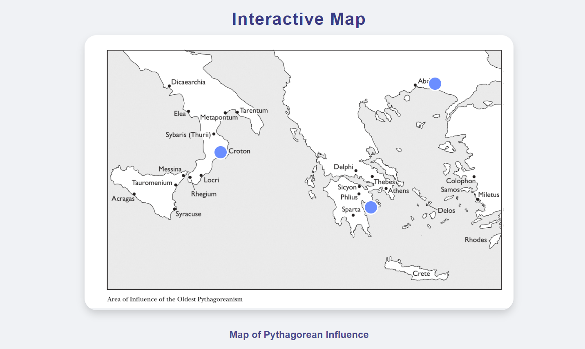
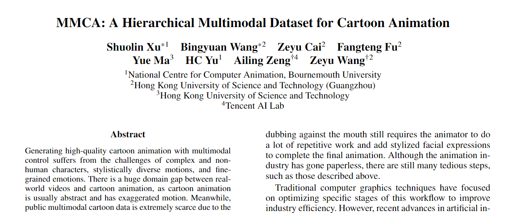

Time-lapse Photography Project
By taking different frames from a video and reconstructing them into a single image. Realize a rendering for still life,
on a time scale.

Phythagorean Influence
An interactive Map decribing the Influence of Phythagorean.

Summer research - MMCA
A research program focus on cartoon animation dataset building and I main contributes to the experiemnt and testing period.